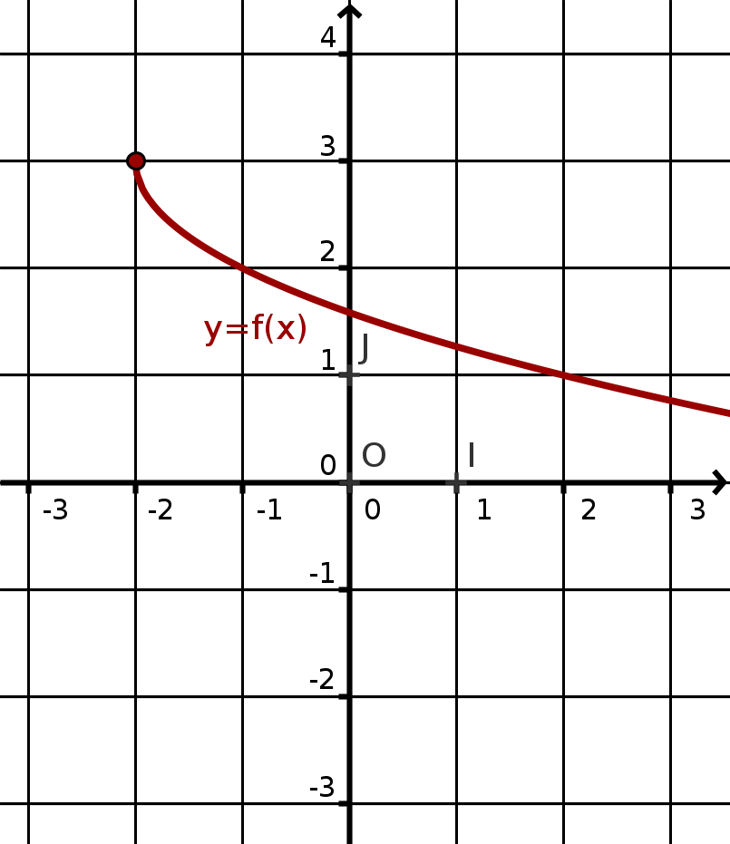
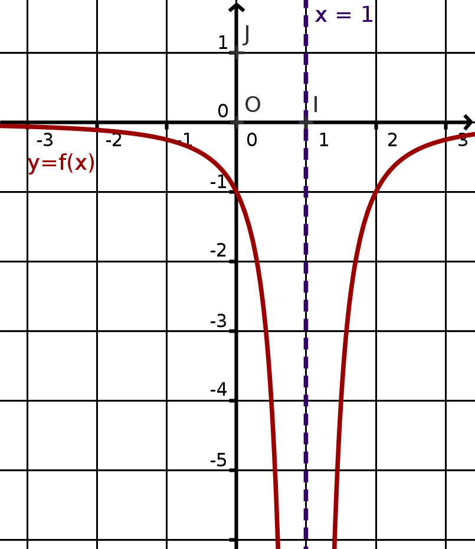
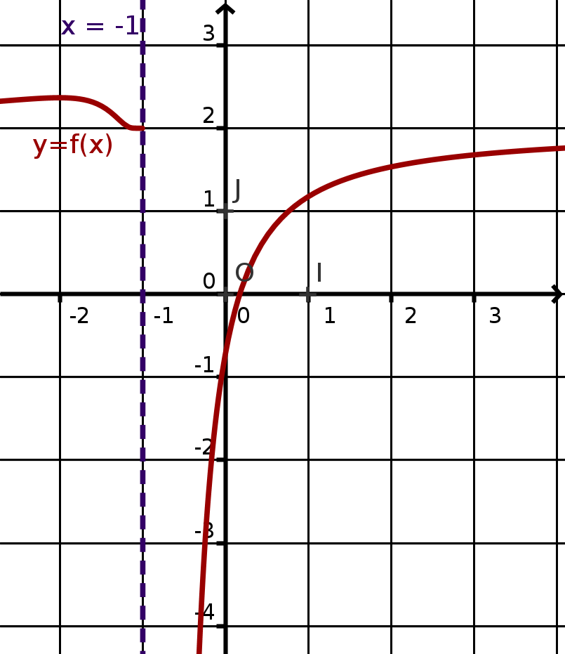
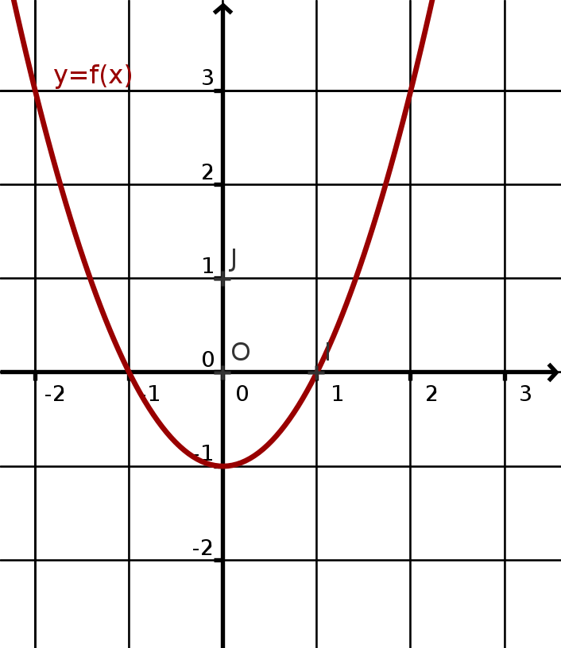
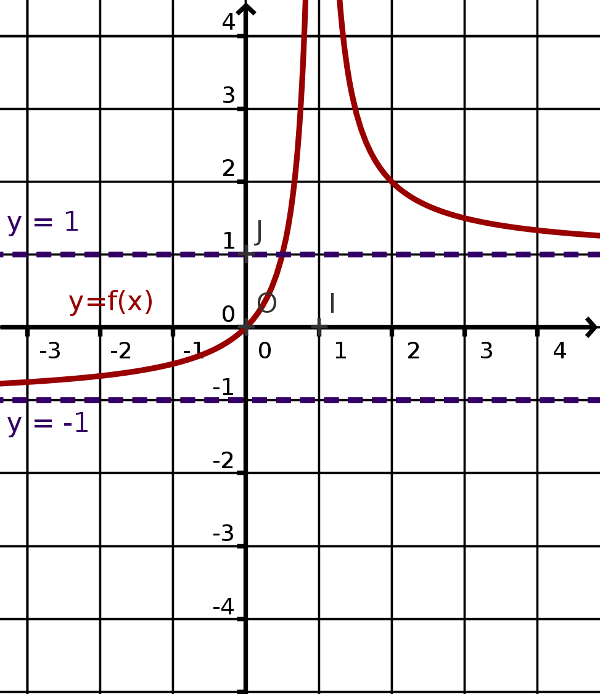
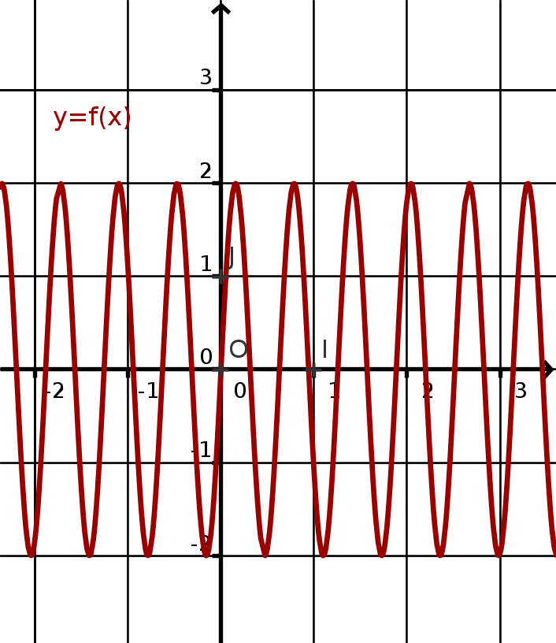
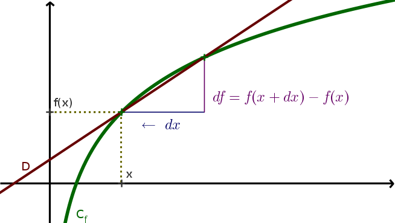

Fonctions : limites, continuité et valeurs intermédiaires
Limites
Définition de la limite d'une fonction
Cadre :
- Soit \(f\) une fonction définie sur \(\mathcal{D}_f\) et soit
\(a\in\mathbb{R}\cup\left\{-\infty;+\infty\right\}\).
Selon le cas, \(a\) peut être dans \(\mathcal{D}_f\) ou bien au bord de \(\mathcal{D}_f\) ; par exemple si \(\mathcal{D}_f=\mathbb{R}\) et que \(a=+\infty\) ou bien si \(\mathcal{D}_f=\left]0;+\infty\right[\) et \(a=0\). - On note \(l\in\mathbb{R}\cup\left\{-\infty;+\infty\right\}\) la limite envisagée.
On dit que \(f(x)\) admet \(l\) pour limite quand \(x\) tend vers \(a\)
et
on
note :
\(\displaystyle\lim_{x\to a}{f(x)} = l\) ou \(\displaystyle \lim_a f = l\)
lorsque les images \(f(x)\) sont aussi proches que l'on veut de \(l\), à condition de prendre
n'importe
quel
\(x\) suffisamment proche de \(a\).
- Si l'on ne considère que les valeurs de \(x<a\) on obtient la limite de \(f\) à gauche de \(a\), notée : \(\displaystyle\lim_{\begin{array}{l} x\to a \\ x<a \end{array}}f(x)\) ou \(\displaystyle\lim_{x\to a^-}{f(x)}\) ou \(\displaystyle\lim_{a^-} f\).
- Si l'on ne considère que les valeurs de \(x>a\) on obtient la limite de \(f\) à droite de \(a\), notée : \(\displaystyle\lim_{\begin{array}{l} x\to a \\ x>a \end{array}}f(x)\) ou \(\displaystyle\lim_{x\to a^+}{f(x)}\) ou \(\displaystyle\lim_{a^+} f\).
asymptote verticale :
Lorsque \(\displaystyle\lim_a f = l\) avec \(a\in\mathbb{R}\) et \(l=\pm\infty\), on dit que la courbe représentative de \(f\) admet une asymptote verticale d'équation \(x=a\).
Lorsque \(\displaystyle\lim_a f = l\) avec \(a\in\mathbb{R}\) et \(l=\pm\infty\), on dit que la courbe représentative de \(f\) admet une asymptote verticale d'équation \(x=a\).
asymptote horizontale :
Lorsque \(\displaystyle\lim_a f = l\) avec \(a=\pm\infty\) et \(l\in\mathbb{R}\), on dit que la courbe représentative de \(f\) admet une asymptote horizontale d'équation \(y=l\).
Lorsque \(\displaystyle\lim_a f = l\) avec \(a=\pm\infty\) et \(l\in\mathbb{R}\), on dit que la courbe représentative de \(f\) admet une asymptote horizontale d'équation \(y=l\).
Exemples graphiques
Limite en un point :
\(\displaystyle\lim_{x\to-2^+}f(x)=3\) : Il n'y a pas d'asymptote.
\(\displaystyle\lim_{x\to1}f(x)=-\infty\) : La courbe de \(f\) admet une asymptote verticale d'équation \(x=1\).
\(\displaystyle\lim_{x\to-1^+}f(x)=-\infty\)
et \(\displaystyle\lim_{x\to-1^-}f(x)=~2\) : La courbe de \(f\) admet une asymptote verticale d'équation \(x=-1\).

\(\displaystyle\lim_{x\to-2^+}f(x)=3\) : Il n'y a pas d'asymptote.

\(\displaystyle\lim_{x\to1}f(x)=-\infty\) : La courbe de \(f\) admet une asymptote verticale d'équation \(x=1\).

\(\displaystyle\lim_{x\to-1^+}f(x)=-\infty\)
et \(\displaystyle\lim_{x\to-1^-}f(x)=~2\) : La courbe de \(f\) admet une asymptote verticale d'équation \(x=-1\).
Limite en \(+\infty\) et \(-\infty\) :
\(\displaystyle\lim_{x\to-\infty}f(x)=+\infty\) et \(\displaystyle\lim_{x\to+\infty}f(x)=+\infty\).
Il n'y a pas d'asymptote.
\(\displaystyle\lim_{x\to-\infty}f(x)=-1\) et \(\displaystyle\lim_{x\to+\infty}f(x)=1\). La courbe de \(f\) admet deux asymptotes horizontales d'équation \(y=-1\) en \(-\infty\) et d'équation \(y=1\) en \(+\infty\).
\(f\) n'admet aucune limite en \(+\infty\) et en \(-\infty\).
sa courbe n'admet pas d'asymptote.

\(\displaystyle\lim_{x\to-\infty}f(x)=+\infty\) et \(\displaystyle\lim_{x\to+\infty}f(x)=+\infty\).
Il n'y a pas d'asymptote.

\(\displaystyle\lim_{x\to-\infty}f(x)=-1\) et \(\displaystyle\lim_{x\to+\infty}f(x)=1\). La courbe de \(f\) admet deux asymptotes horizontales d'équation \(y=-1\) en \(-\infty\) et d'équation \(y=1\) en \(+\infty\).

\(f\) n'admet aucune limite en \(+\infty\) et en \(-\infty\).
sa courbe n'admet pas d'asymptote.
Limites des fonctions usuelles
Fonctions puissances :
\(n\) est un entier \(>0\) ; on a : \(\displaystyle\lim_{x\to+\infty}x^n=+\infty\) et \(\displaystyle\lim_{x\to-\infty}x^n=\begin{array}{|l}+\infty\textrm{ si }n\textrm{ est pair} \\ -\infty\textrm{ si }n\textrm{ est impair}\\ \end{array}\)
Pour leurs inverses : \(\displaystyle\lim_{x\to-\infty}\frac{1}{x^n}=\lim_{x\to+\infty}\frac{1}{x^n}=0\)
En \(0\) ces inverses ne sont pas définis (\(0\) est valeur interdite). On a donc les limites suivantes au voisinage de \(0\) :
\(n\) est un entier \(>0\) ; on a : \(\displaystyle\lim_{x\to+\infty}x^n=+\infty\) et \(\displaystyle\lim_{x\to-\infty}x^n=\begin{array}{|l}+\infty\textrm{ si }n\textrm{ est pair} \\ -\infty\textrm{ si }n\textrm{ est impair}\\ \end{array}\)
Pour leurs inverses : \(\displaystyle\lim_{x\to-\infty}\frac{1}{x^n}=\lim_{x\to+\infty}\frac{1}{x^n}=0\)
En \(0\) ces inverses ne sont pas définis (\(0\) est valeur interdite). On a donc les limites suivantes au voisinage de \(0\) :
- si \(n\) est pair : \(\displaystyle\lim_{x\to0^-}\frac{1}{x^n}=\lim_{x\to0^+}\frac{1}{x^n}=+\infty\)
- si \(n\) est impair : \(\displaystyle\lim_{x\to0^-}\frac{1}{x^n}=-\infty\) et \(\displaystyle\lim_{x\to0^+}\frac{1}{x^n}=+\infty\).
Donner les limites en \(-\infty\) et \(0^-\) des expressions suivantes :
\(x^3\) ; \(\frac{1}{x^4}\) et \(\frac{1}{x^3}~\).
Polynômes :
Les limites en \(+\infty\) ou \(-\infty\) d'un polynôme \(P(x)=a_nx^n+a_{n-1}x^{n-1}+\cdots+a_1x+a_0\) sont les mêmes que celles du terme de plus haut degré \(a_nx^n\) (terme dominant).
Les limites en \(+\infty\) ou \(-\infty\) d'un polynôme \(P(x)=a_nx^n+a_{n-1}x^{n-1}+\cdots+a_1x+a_0\) sont les mêmes que celles du terme de plus haut degré \(a_nx^n\) (terme dominant).
Donner les limites en \(-\infty\) et \(+\infty\) des expressions suivantes :
\(A(x)=x^2-x\) ; \(B(x)=x-x^3\) et \(C(x)=2x^5+x^3\).
Limites et opérations :
Limites d'une somme :
\(l,l'\) sont des réels et désignent des limites finies.
| \(\displaystyle\lim_a f\) | \(l\) | \(l\) | \(l\) | \(+\infty\) | \(-\infty\) | \(-\infty\) |
|---|---|---|---|---|---|---|
| \(\displaystyle\lim_a g\) | \(l'\) | \(+\infty\) | \(-\infty\) | \(+\infty\) | \(-\infty\) | \(+\infty\) |
| \(\displaystyle\lim_a f+g\) | + | FI |
Compléter le tableau.
Calculer les limites suivantes :
- \(\displaystyle\lim_{x\to-\infty}\left(\frac{1}{x}+2\right)\) ;
- \(\displaystyle\lim_{x\to-\infty}\left(\frac{1}{x^2}+x^2\right)\) ;
- \(\displaystyle\lim_{x\to0^+}(\dfrac{1}{x}+x^2)\).
Limites d'un produit :
| \(\displaystyle\lim_a f\) | \(l\) | \(l\neq0\) | \(\pm\infty\) | \(0\) |
|---|---|---|---|---|
| \(\displaystyle\lim_a g\) | \(l'\) | \(\pm\infty\) | \(\pm\infty\) | \(\pm\infty\) |
| \(\displaystyle\lim_a f\times g\) | \(l\times l'\) | \(*\infty\) | \(*\infty\) | FI |
\(*\infty\) : pour trouver si \(*\) est \(+\) ou \(-\), on applique la règle des signes.
Calculer les limites suivantes :
- \(\displaystyle\lim_{x\to-\infty}(x-2)(x+7)\) ;
- \(\displaystyle\lim_{x\to0^+}(x-3)\frac{1}{x}\) ;
- \(\displaystyle\lim_{x\to-\infty}(x-1)x^3\).
Limites d'un quotient : attention à tenir compte du signe
(0+ ou 0-)
| \(\displaystyle\lim_a f\) | \(l\) | \(l\) | \(l\) | \(\pm\infty\) | \(\pm\infty\) | \(0\) |
|---|---|---|---|---|---|---|
| \(\displaystyle\lim_a g\) | \(l'\neq0\) | \(\pm\infty\) | \(0\) | \(l'\) | \(\pm\infty\) | 0 |
| \(\displaystyle\lim_a \frac{f}{g}\) | \(\frac{l}{l'}\) | \(0\) | \(*\infty\) | \(*\infty\) | FI | FI |
Calculer les limites suivantes :
- \(\displaystyle\lim_{x\to-\infty}\frac{\frac{1}{x}-3}{x^2}\) ;
- \(\displaystyle\lim_{x\to0^+}\frac{1}{x-1}\) ;
- \(\displaystyle\lim_{x\to-\infty}\frac{3-\dfrac{1}{x^2}}{x}\).
Limite d'une fonction composée :
Soit deux fonctions \(f\) et \(g\).
Si \(\left\{\begin{array}{l}\displaystyle\lim_a f=b \\ \displaystyle\lim_b g=c \\ \end{array}\right.\) alors \(\displaystyle\lim_a g(f(x))=c\).
Si \(\left\{\begin{array}{l}\displaystyle\lim_a f=b \\ \displaystyle\lim_b g=c \\ \end{array}\right.\) alors \(\displaystyle\lim_a g(f(x))=c\).
Calculer les limites suivantes :
- \(\displaystyle\lim_{x\to-\infty}\dfrac{1}{x^2+3}\) ;
- \(\displaystyle\lim_{x\to+\infty}\sqrt{2x+1}\) ;
- \(\displaystyle\lim_{x\to+\infty}\sqrt{25+\dfrac{1}{x}}\).
Traitement des formes indéterminées :
Il y a quatre FI : \(+\infty-\infty\) ; \(0\times\pm\infty\) ; \(\frac{\pm\infty}{\pm\infty}\) ; \(\frac{0}{0}\).
Il y a quatre FI : \(+\infty-\infty\) ; \(0\times\pm\infty\) ; \(\frac{\pm\infty}{\pm\infty}\) ; \(\frac{0}{0}\).
Il faut essayer de mettre le terme le plus « fort » en facteur et simplifier,
ou
bien
factoriser et simplifier, ou bien développer, ou bien se servir de la quantité conjuguée (en
présence de
racines carrées), ou bien utiliser les propriétés de croissances comparées (en présence de
\(\ln\)
et \(\exp\)
: cf chapitre correspondant).
Calculer les limites suivantes :
- \(\displaystyle\lim_{x\to+\infty}\frac{1}{x}(x^2+1)\) ;
- \(\displaystyle\lim_{x\to+\infty}\sqrt{x^2+1}-x\) ;
- \(\displaystyle\lim_{x\to0^+}\dfrac{1}{\sqrt{x}}-\dfrac{1}{x}\)
Continuité
Soit \(a\) un réel.
Une fonction \(f\) est dite continue lorsqu'on a :
\(\displaystyle\lim_{x\to a^-}f(x)=f(a)=\displaystyle\lim_{x\to a^+} {f(x)}\).
- Si on a juste l'égalité de gauche, on dit que \(f\) est continue à gauche de \(a\).
- Si on a juste l'égalité de droite, on dit que \(f\) est continue à droite de \(a\).
Lorsque \(a\) est sur le bord gauche (resp. droit) d'un intervalle de l'ensemble de définition de \(f\), on
ne
considère pas la limite en \(a^-\) (resp. en \(a^+\)).
La fonction racine carrée est continue en \(0\) car \(\displaystyle\lim_{x\to 0^+}{\sqrt{x}}=0\) et
\(\sqrt{0}=0\).
Graphiquement, une fonction est continue lorsque sa courbe peut être tracée sans lever le crayon
de la feuille :
sa courbe ne présente pas de «sauts» de valeurs.
Les fonctions affines, carré, inverse, racine carrée, valeur absolue, polynômes, \(\cos\),
\(\sin\)
et
\(\tan\)
sont continues sur tout intervalle inclus dans leurs ensemble de définition.
Une fonction définie sur \(\mathbb{R}\) mais non continue en chaque entier relatif : la
fonction partie
entière :
À tout réel \(x\) on associe l'entier (relatif) \(E(x)\) immédiatement inférieur à \(x\).
À tout réel \(x\) on associe l'entier (relatif) \(E(x)\) immédiatement inférieur à \(x\).
- Tracer la courbe représentant la fonction \(E\) dans le repère ci-contre.
- Discuter de la continuité à gauche et à droite de \(E\) en chaque entier.
(admise) Dérivable \(\Rightarrow\) continue
Si une fonction \(f\) est dérivable sur un intervalle \(I\), alors elle est continue sur \(I\).
Si une fonction \(f\) est dérivable sur un intervalle \(I\), alors elle est continue sur \(I\).
La réciproque est fausse : la fonction racine carrée est continue en \(0\) mais pas dérivable en
\(0\).
Dérivation (rappels)
Nombre dérivé et tangente
On se donne une fonction \(f\) et on se place en un \(x\) fixé. Soit \(dx\) un petit
accroissement
de la
variable \(x\) (positif ou négatif), correspondant à un accroissement
\(df=f(x+\textrm{d}x)-f(x)\) des
images.
Si l'on fait tendre \(dx\) vers \(0\), la droite \(D\) prend une position de tangente à la courbe de \(f\) en \(x\).
Si l'on fait tendre \(dx\) vers \(0\), la droite \(D\) prend une position de tangente à la courbe de \(f\) en \(x\).
Si \(\displaystyle\lim_{dx\to0} \frac{df}{dx}\) existe,
on dit que \(f\) est dérivable en \(x\) ; on note alors \(f'(x)\) ou bien
\(\displaystyle\frac{\textrm{d}f}{\textrm{d}x}(x)\) cette limite, que l'on appelle nombre
dérivé
de \(f\) en \(x\), et qui indique le coefficient directeur de la tangente à la courbe de \(f\) en
\(x\).
L'équation de la tangente à la courbe de \(f\) en \(x=a\) est :
\(y=f'(a)(x-a)+f(a)\).

Calculer l'équation de la tangente à la courbe de \(f(x)=x^3-2x\) en \(x=0{,}5\).
Dérivées de fonctions usuelles
\(\displaystyle\begin{array}{|c|c|} \hline f(x) & f'(x)\hline \hline \textrm{cte} & 0
\hline x^\alpha~~ (\alpha\in\R) & \alpha x^{\alpha-1}
\hline \frac{1}{x}=x^{-1} & \frac{-1}{x^2}=-x^{-2}
\hline \sqrt{x}=x^\frac{1}{2} & \frac{1}{2\sqrt{x}}=\frac{1}{2}x^{-\frac{1}{2}}
\hline \cos x & -\sin x
\hline \tan x & \frac{1}{(\cos x)^2}=1+(\tan x)^2
\hline \end{array}\) Fonctions composées :
\(u\) désigne une fonction dérivable ; \(\omega\), \(\phi\) sont des constantes réelles ; \(n\) est un entier naturel différent de \(0\). \(\displaystyle\begin{array}{|c|c|} \hline f & f'
\hline \hline \frac{1}{u}~~~~(u\neq0)& \frac{-u'}{u^2}
\hline u^n & nu'u^{n-1}
\hline \sqrt{u} & \frac{u'}{2\sqrt{u}}
\hline \sin(\omega t+\phi) & \omega\cos(\omega t+\phi)
\hline \cos(\omega t+\phi) & -\omega\sin(\omega t+\phi)
\hline \arctan u & \frac{u'}{1+u^2}
\hline \end{array}\)
Dérivées et opérations
\(u\) et \(v\) sont deux fonctions dérivables sur un intervalle \(I\) et \(k\) est une constante réelle :
!!!!!!
Somme :\hspace{2cm}\((u+v)'=u'+v'\)
!!!!!!
\(\left(x^2+x^3\right)'=2x+3x^2\)
!!!!!!
Produit par une constante :~~~~~~~~~~\((ku)'=u'\)
!!!!!!
\(\left(5x^2\right)'=5\left(x^2\right)'=5\times2x=10x\)
!!!!!!
Produit de deux fonctions : ~~~~~~~~~~\((uv)'=u'v+v'u\)
!!!!!!
\(\left(x\sin x\right)'=x'\sin x+x(\sin x)'=1\sin x+x\cos x\)
!!!!!!
Quotient : (\(v\) ne s'annule pas sur \(I\)).~~~~~~~~~~\(\left(\displaystyle\frac{u{v}\right)'=\frac{u'v-v'u}{v^2}\)}
!!!!!!
\(\left(\displaystyle\frac{\textrm{e}^x}{x}\right)'=\frac{\left(\textrm{e}^x\right)'x-x'\textrm{e}^x}{x^2}=\frac{\textrm{e}^xi x-1\textrm{e}^x}{x^2}=\frac{(x-1)\textrm{e}^x}{x^2}\)
Principe de Lagrange
Soit \(f\) une fonction dérivable sur un intervalle \(I\).Une fois que l'on a calculé la dérivée d'une fonction, il faut la factoriser
au
mieux
pour
déterminer son signe. En effet connaître le signe de la dérivée \(f'\) nous permet de
connaître
les
variations
de \(f\) :
!!!!!!
\begin{itemize}
\(\Rightarrow\) \(f\) est constante sur \(I\) ;
!!!!!!
Si \(f'\) s'annule et change de signe pour en \(a\) dans \(I\), alors
\begin{itemize}
\(\Rightarrow\) \(f\) admet un minimum local pour \(x=a\) ;
\(\Rightarrow\) \(f\) admet un maximum local pour \(x=a\) . \end{itemize}
!!!!!!
La condition de changement de signe est importante : en effet \(x\mapsto x^3\) a pour dérivée
\(3x^2\)
qui
s'annule en \(0\) mais ne change pas de signe (elle reste positive) ; la fonction cube n'admet
pas
de
max/min en
\(x=0\) (elle est strictement croissante).
Non-dérivabilité : aspect graphique
Une fonction continue sur un intervalle \(I\) n'est pas forcément dérivable en tout \(x\) dans \(I\) ; on peut visualiser ce caractère non-dérivable lorsqu'on observe : \begin{itemize}Théorème des valeurs intermédiaires
Conventions dans un tableau de variation
Convention : Une flèche dans un tableau de variation d'une fonction indique à la fois : \begin{itemize}Théorème des valeurs intermédiaires
But : Soit \(k\) un réel et \(f\) une fonction. On cherche à résoudre l'équation \(f(x)=k\).\textsc{Théorème : }(admis) théorème des valeurs intermédiaires
Soit \(f\) une fonction continue sur un intervalle \(I\) et \(a
!!!!!!
Il est aussi possible d'utiliser des valeurs limites de \(f\).Tracer une fonction \(f\) continue sur \([-3;6]\) telle que \(f(x)=2\) ait
\(3\)
solutions :
Soit \(f\) la fonction définie sur \(\R\) par \(f(x)=\frac{1
{3}x^{3}
+
\frac{1}{2}x^{2}
- 6x - 1\)
- Étudier les variations de \(f\).
- Démontrer que l'équation \(f(x)=3\) a au moins une solution.
!!!!!!
unicité de la solution
Soit \(f\) une fonction continue et strictement monotone sur un
intervalle
\(I\)
et
\(a
!!!!!!
Il est toujours possible d'utiliser des valeurs limites de \(f\).Soit \(f\) la fonction définie sur \(\R\) par \(f(x)=\frac{1
{3}x^{3}
+
\frac{1}{2}x^{2} - 6x - 1\)Démontrer que l'équation \(f(x)=3\) a une unique solution dans \(\left[3;+\infty\right[\).
}
Obtenir une approximation d'une solution de l'équation \(f(x)=k\), avec \(k\) réel fixé
Il existe deux méthodes : \begin{itemize}On utilise la table de calculatrice, en affinant le pas jusqu'à la précision désirée, pour localiser la solution.
Lorsque l'on a localisé la solution dans un intervalle \([a;b]\), on calcule \(f\left(\frac{a+b}{2}\right)\) ; en s'aidant du tableau de variations, on voit si la solution est localisée dans la première moitié ou seconde moitié de l'intervalle \([a;b]\) ; on répète alors la même méthode plusieurs fois sur des intervalles imbriqués dont les longueurs diminuent à chaque étape de moitié, jusqu'à arriver à la précision désirée. \end{itemize}